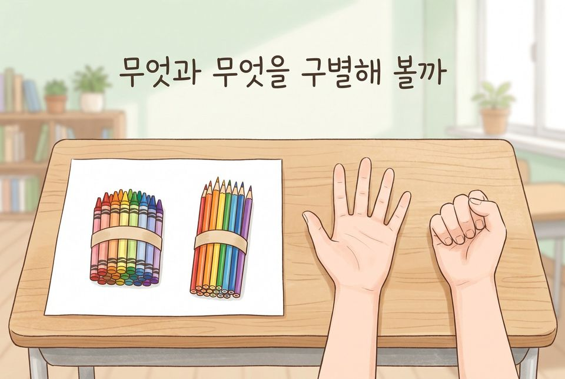
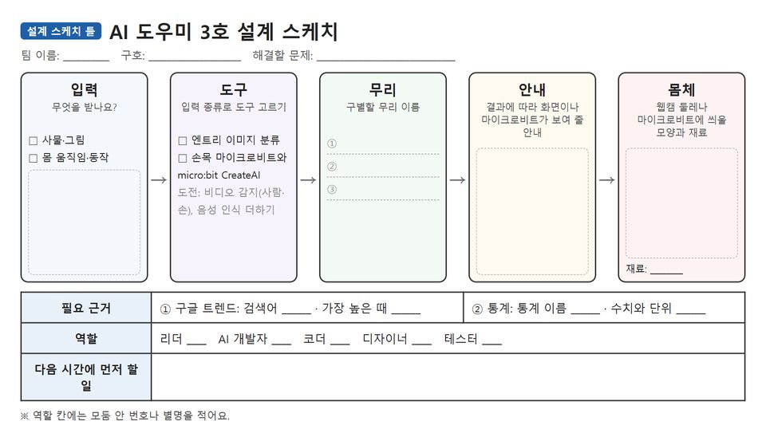
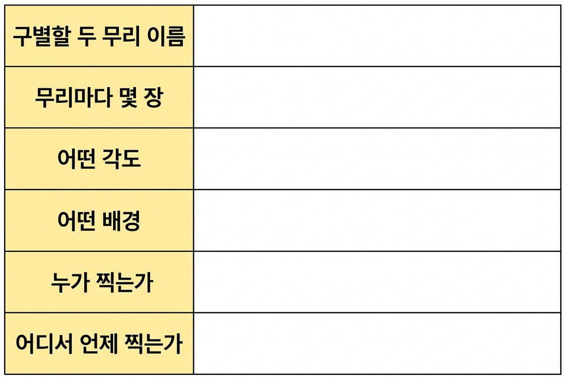
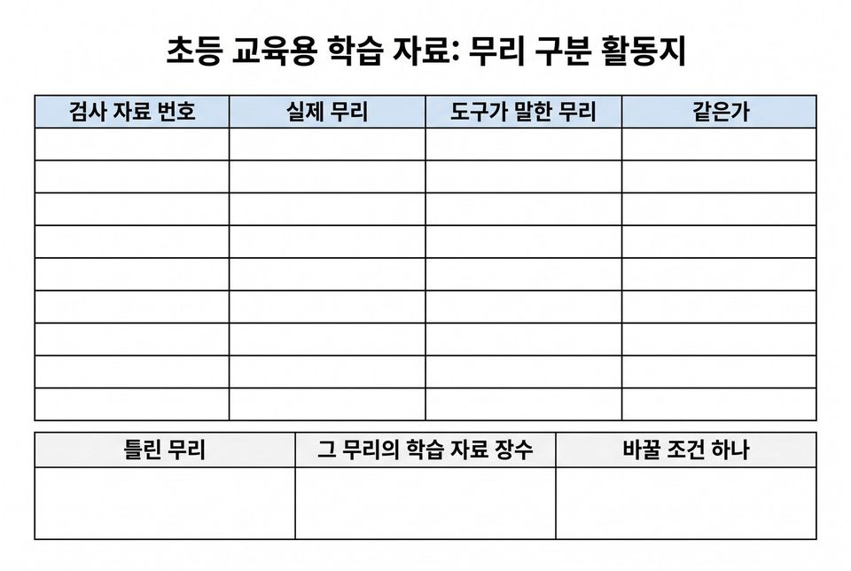
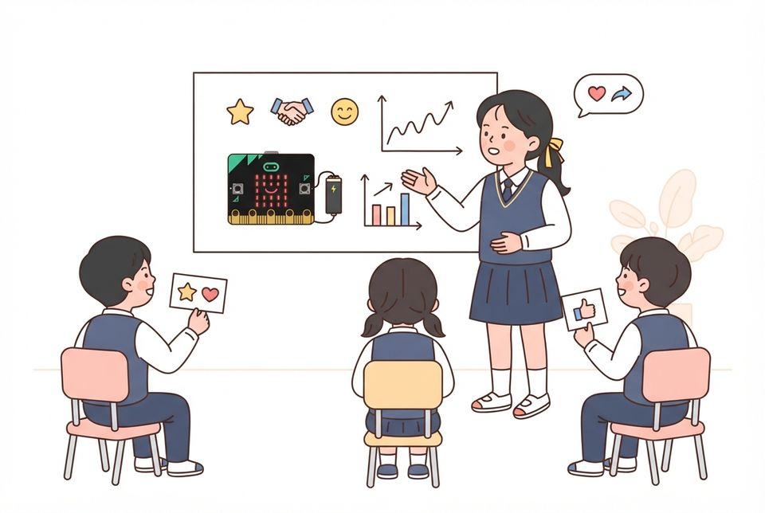

동의를 받아 모은 자료로 실물이나 몸 동작을 알아보는 AI 도우미를 만들어 발표회에서 나누기
학습 문제 — 동의를 받아 자료를 모으고, 시험 결과로 고친 AI 도우미를 친구들과 나누어 봅시다.
개요
| 성취기준 | [6실인공지능05-01] 인공지능으로 생활 속 문제를 해결하고, 결과를 친구들과 공유한다. 연계 성취기준: [6실05-05] |
|---|---|
| 핵심 역량 | 지식정보처리 역량, 협력적 소통 역량 |
| 핵심 기능 | ① 인공지능이 만들어지는 과정 탐색하기 ② 세 가지 기준으로 문제 후보를 가리고 도구 고르기 ③ 동의 절차와 수집 조건을 정해 자료 모으기 ④ 시험 데이터로 맞고 틀린 것 세어 보기 ⑤ 조건 하나만 바꾸어 다시 확인하고 도우미를 시연하기 |
| 가치 태도 | 인공지능이 사회에 미치는 영향을 파악하는 자세 자료를 모은 조건과 틀린 결과를 밝혀 친구들과 공유하려는 자세 |
교수학습 활동
27차시 도입 동기 유발 · 학습문제 제시27차시 전개 활동1. 미션 카드 판정단 되기 · 활동2. 필요 근거 찾고 도우미 설계하기28차시 전개 활동3. 수집 조건과 동의 절차 정하기28차시 전개 활동4. 약속대로 자료 모으기29차시 전개 활동5. 모델 만들고 시험 데이터로 확인하기29차시 전개 활동6. 조건 하나만 바꾸어 도우미 2.0 만들기30차시 전개 활동7. 도우미 완성하고 발표회에서 나누기30차시 정리 배운 내용 정리 · 다음 차시 예고
27차시도입8분
동기 유발
- 우리 팀이 만든 판단 도우미와 손 씻기 코치 떠올리기
- 새 의뢰서 “우리 학교를 돕는 AI 도우미를 만들어 전달해 주세요” 읽기
- 미션: 팀 이름을 정하고 AI 도우미 3호를 완성하는 ‘도우미 해커톤’

학습문제 제시
- 동의를 받아 자료를 모으고, 시험 결과로 고친 AI 도우미를 친구들과 나누어 봅시다.
준비물필기구, 미션 후보 카드 4장
자료문제 판정 활동지, 의뢰서, [도입] 상황 그림
유의점활동지 배부와 자리 정돈 시간을 도입 시간에 포함한다.
유의점‘AI가 무엇이든 해 준다’는 반응은 부정하지 말고 판정 기준으로 이어 간다.
유의점의뢰서는 수업용 가상 설정이며, 활동1까지는 기기를 쓰지 않는다.
유의점미션 후보는 교사가 네 장으로 정해 주고, 새 후보는 판정을 통과할 때만 받는다.
27차시전개32분
활동1. 미션 카드 판정단 되기 (10분)
- 미션 후보 카드 네 장을 읽고 정말 해 볼 수 있는 것 짚어 보기
- 보는 것이나 움직임으로 무리를 나눌 수 있는지 따져 보기
- 얼굴이나 이름 없이 자료를 모을 수 있는지 확인하기
- 맞았는지 확인할 방법이 있는지 살펴보기
- 카드마다 통과·탈락 도장을 찍고 걸린 기준과 까닭 적기
활동2. 필요 근거 찾고 도우미 설계하기 (22분)
- 통과한 후보 하나를 골라 구별할 무리 이름 적기
- 교사 통계 자료표에서 문제의 크기를 보여 줄 근거 하나 고르기
- 근거 카드에 출처·수치·단위·기준 연도 적기
- 기본 도구는 엔트리 이미지 분류로 정하기
- 선택: 마이크로비트가 있는 모둠은 몸 동작형(CreateAI) 고르기
- 결과에 따라 화면이 보여 줄 안내 스케치하기
- 리더·AI 개발자·코더·디자이너·테스터 역할 정하기
- 도전: 구글 트렌드로 관련 검색어의 관심 변화 살피기

준비물필기구, 통과·탈락 도장, 학생 기기(모둠당 한 대)
자료문제 판정 활동지, 설계 스케치 틀, 근거 카드, 미리 받아 둔 주제별 통계 자료표
유의점세 기준을 통과하지 못한 후보는 걸린 기준만 말하고 채택하지 않는다.
유의점트렌드 0~100은 상대값이므로 사람 수처럼 말하지 않는다.
유의점동작형 모둠 수는 마이크로비트 수에 맞추어 교사가 정한다.
유의점느린 모둠은 통과 카드 가운데 하나를 고르고, 빠른 모둠은 트렌드 도전을 한다.
28차시전개20분
활동3. 수집 조건과 동의 절차 정하기 (20분)
- 무리마다 학습 데이터 열 개, 시험 데이터 다섯 개로 잡기
- 사물형: 각도(위·옆)와 배경(흰 종이·바닥) 정하기
- 동작형: 찰 손·위치·빠르기 정하고 샘플·시험 다섯 번씩 잡기
- 찍히는 사람에게 목적·쓰는 곳·지우는 날 알리고 동의 받기
- 얼굴 대신 손·물건만 화면에 들어오게 찍는 범위 정하기
- 수업 뒤 지울 날짜와 지울 사람을 기록표에 적기

준비물학급 기기(모둠당 한 대 이상, 웹캠), 동작형 모둠: 마이크로비트 V2(손목용·무선 연결용), USB 케이블, 배터리 팩, 손목 밴드
자료수집 조건 기록표(동의 확인·지울 날짜 칸)
유의점조건과 동의 절차를 먼저 정해 적은 뒤에 모은다.
유의점동의하지 않은 친구는 찍지 않고 촬영이나 기록을 맡게 한다.
유의점기기 배부·로그인 시간을 이 활동에 포함한다.
유의점사전 준비: 동작형 기기에 프로그램을 미리 넣어 두고 번호표·배터리·연결 시험을 점검한다.
28차시전개20분
활동4. 약속대로 자료 모으기 (20분)
- 찍기 전에 동의했는지 한 번 더 묻기
- 사물형: 정해 둔 각도와 배경 그대로 손·물건만 찍기
- 동작형: 무선 연결용 마이크로비트로 CreateAI에 이어 샘플 녹화하기
- 얼굴이나 명찰이 들어온 사진은 그 자리에서 지우기
- 목록표의 개수와 실제 개수가 같은지 세어 보기
- 시험 데이터가 학습 묶음에 섞이지 않았는지 표시하기
- 선택: 디자이너는 재활용품으로 도우미 몸체 만들기
준비물학급 기기, 재료 창고(골판지·종이컵·재활용 상자·가위·테이프, 선택)
자료학습·시험 데이터 목록표, 검사 카드
유의점교실을 벗어나 촬영하지 않는다.
유의점동작 녹화는 부딪치지 않는 자리에서 한다.
유의점무선 연결용 마이크로비트(라디오 연결)를 기본으로 쓰고, 안 되면 교사 기기로 녹화한다.
유의점몸체 만들기는 선택이며 자료 모으기와 모델 만들기 시간을 줄여 가며 하지 않는다.
유의점글루건은 교사가 맡고 칼 대신 가위를 쓴다.
29차시전개20분
활동5. 모델 만들고 시험 데이터로 확인하기 (20분)
- 사물형: 엔트리 [인공지능 모델 학습하기]→[분류: 이미지] 고르기
- 사물형: 클래스 이름을 적고 학습 데이터만 [업로드]해 [모델 학습하기]
- 동작형: CreateAI에서 모델 학습(Train) 단추 누르기
- 시험 데이터를 하나씩 넣어(동작형은 검사 카드 차례로) 결과 보기
- 실제 무리와 도구가 말한 무리를 한 줄씩 적기
- 시험 데이터 가운데 몇 개를 맞혔는지 세어 적기
준비물학급 기기, 동작형 모둠 마이크로비트
자료시험 결과 기록표
유의점학습 데이터로는 시험하지 않는다.
유의점화면에 나오는 확신 %(신뢰도)를 맞은 개수로 옮겨 적지 않는다.
유의점메뉴·단추 이름과 CreateAI 저장 방법은 수업 전에 화면에서 확인한다.
29차시전개20분
활동6. 조건 하나만 바꾸어 도우미 2.0 만들기 (20분)
- 틀린 자료가 어느 무리에 속하는지 무리별로 세기
- 그 무리의 학습 데이터 개수와 수집 조건 찾아 적기
- 기본: 틀린 무리의 학습 데이터 수 늘리기
- 선택: 각도·배경(동작형은 빠르기) 가운데 하나만 바꾸기
- 바꾼 자료로 다시 학습하고 같은 시험 데이터로 결과 적기
- 맞은 개수가 오르지 않은 결과도 그대로 적고 1.0→2.0 기록하기

준비물학급 기기
자료시험 결과 기록표, 도우미 1.0→2.0 기록표
유의점조건은 하나만 바꾸게 하고, 두 가지 이상 바꾼 모둠은 그 사실을 적은 뒤 비교 해석을 미룬다.
유의점한두 개 차이를 조건 때문이라고 단정하지 않는다.
유의점자료를 더 모을 때도 활동3에서 정한 동의·촬영 범위 약속을 그대로 지킨다.
30차시전개33분
활동7. 도우미 완성하고 발표회에서 나누기 (33분)
- 사물형: [학습한 모델로 분류하기] 뒤에 [만일 〈분류 결과가 ( )인가?〉] 잇기
- 사물형: 무리마다 [말하기]·[읽어주기]로 안내 넣기
- 동작형: ‘MakeCode에서 편집’으로 모델 옮기기
- 동작형: [ML 동작(이름)을 알아봤을 때]에 아이콘·소리 넣기
- 포스터에 도우미 이름·해결한 문제·필요 근거와 출처 적기
- 포스터에 모은 조건·동의와 삭제 약속·틀린 것과 까닭 적기
- 팀 절반은 1분 발표·시연, 절반은 두 팀 이상 돌며 써 보기
- 역할을 바꾸어 한 번 더 하고 응원 스티커와 붙임쪽지 남기기

준비물학급 기기, 붙임쪽지, 응원 스티커(1인 3장), 4절 포스터 종이
자료포스터 틀, 듣고 적기 표, 활동2 근거 카드, 블록 뼈대 도움 카드
유의점MakeCode로 옮겨 기기 안에서 모델을 돌리려면 V2가 필요함을 알린다.
유의점포스터와 발표에 틀린 것을 반드시 넣게 하고, 공유는 교실 안에서만 한다.
유의점맞은 개수나 응원 스티커 수로 모둠을 견주어 평가하지 않는다.
유의점포스터에는 사람 사진을 붙이지 않고, 출처 없는 수치는 붙이지 않는다.
유의점완성이 늦은 모둠은 모델 결과 화면으로 시연하게 한다.
30차시정리7분
배운 내용 정리 (5분)
- 우리 도우미가 구별할 수 있는 것과 못 하는 것 쓰기
- 발표회에서 본 틀린 것 하나와 그 까닭 적기
- 받은 붙임쪽지 가운데 다음에 고칠 점 하나 고르기
다음 차시 예고 (2분)
- 전달 전 안전 점검 회의에서 누구에게 불편할 수 있는지 살펴볼 것 알기
- 목록표·기록표·작품을 저장하고 활동지 제출하기
자료학습 데이터 목록표, 시험 결과 기록표
유의점쓰기를 어려워하는 학생은 구술로 확인하고 지원한 사실을 적는다.
유의점동작형 작품은 MakeCode 파일로 저장해 둔다.
유의점모은 사진·녹화는 31~32차시 점검에만 쓰고, 그 뒤 약속한 날에 교사와 함께 지운다.
평가 계획
인공지능 소양 · 학습 데이터 조건과 시험 결과의 연결
동의 절차와 수집 조건을 정해 자료를 모으고, 시험 결과에서 틀린 것을 학습 데이터 조건과 이어 조건 하나를 바꾸어 다시 확인할 수 있는가?
| 수준 | 평가 기준 |
|---|---|
| 매우 잘함 | 후보를 세 기준으로 판정해 걸린 기준과 까닭을 밝히고, 수집 조건과 함께 동의 받기·얼굴 대신 손·물건 찍기·지울 날짜를 기록표에 적어 그대로 지킨다. 틀린 자료가 속한 무리를 세어 그 무리의 학습 데이터 개수와 수집 조건에 이어 설명하고, 조건 하나만 바꾸어 다시 시험한 결과를 오르지 않은 경우까지 그대로 적는다. 도우미를 시연하며 숫자를 들어 틀린 것과 까닭을 설명하고, 출처를 밝힌 근거로 문제의 크기를 말한다. |
| 잘함 | 세 기준으로 후보를 판정하고 수집 조건과 동의 절차를 기록해 지킨다. 시험 결과를 적고 틀린 무리를 확인해 조건 하나를 바꾸어 다시 시험하며, 도우미를 시연하면서 틀린 것을 말한다. |
| 보통 | 수집 조건은 정하나 동의 절차나 지울 날짜 가운데 일부가 비어 있다. 또는 시험 결과는 적었으나 틀린 것을 학습 데이터 조건과 잇지 못하거나, 조건을 두 가지 이상 함께 바꾸어 무엇 때문인지 말하지 못한다. |
| 노력요함 | 교사가 판정 기준과 데이터 목록표, 동의 절차를 함께 짚어 준 뒤에도 후보를 기준으로 판정하거나, 틀린 자료를 자기 학습 데이터와 이어 말하는 데 어려움이 있다. |
| 미관찰 | 결석이나 미제출로 확인하지 못한 경우. 낮은 성취로 적지 않고 따로 기록한 뒤 보충 확인 시점을 정한다. |
평가 방법 산출물 분석(설계 스케치·수집 조건 기록표·소개 포스터) · 활동지 분석 · 작품 실행 확인 · 구술 확인 · 관찰
연동 도구·링크
과정안에 나오는 도구가 저절로 걸립니다. 수업 전에 학교망에서 열리는지, 블록·메뉴 이름이 바뀌지 않았는지 확인하세요.
MakeCode (micro:bit) ↗마이크로비트 블록 코딩·시뮬레이터·무선(라디오)계정: 필요 없음라디오 블록 설명 ↗MakeCode (micro:bit) 안내마이크로비트 V2 ↗LED·버튼·가속도·소리 센서, 무선 통신계정: 필요 없음micro:bit CreateAI ↗움직임 데이터로 동작 모델 학습·시험, 움직임 그래프계정: 필요 없음(크롬·엣지)CreateAI 사용 안내 ↗micro:bit CreateAI 안내엔트리 ↗블록 코딩, 인공지능 블록, 데이터 분석(테이블·차트)계정: 학생 계정 없이 만들기 화면 사용 가능(저장은 교사 계정)엔트리 사용 설명서 ↗엔트리 안내엔트리 이미지 분류 모델 ↗웹캠·사진으로 분류 모델 학습계정: 엔트리와 같음엔트리 번역·읽어주기 ↗번역, 글을 소리로 읽기계정: 엔트리와 같음읽어주기 블록 ↗엔트리 번역·읽어주기 안내구글 트렌드 ↗관심 변화(상대값) 보기 — 교사 화면 시연계정: 필요 없음CreateAI 사용 안내 ↗동작형 도우미
내 수업 링크
학급 패들렛, 엔트리 작품, 활동지 주소처럼 이 차시에 쓸 링크를 걸어 둡니다. 이 브라우저에만 저장되고 밖으로 보내지 않습니다. 학생 이름이 든 주소는 넣지 마세요.